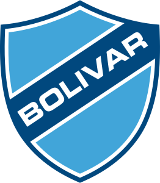
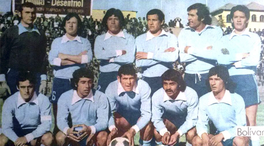
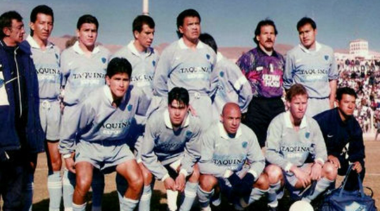
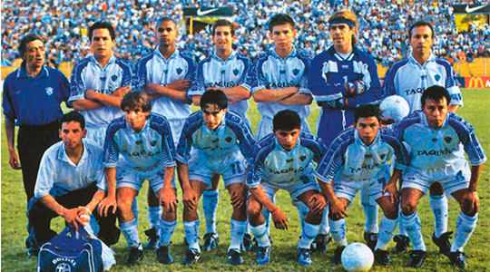
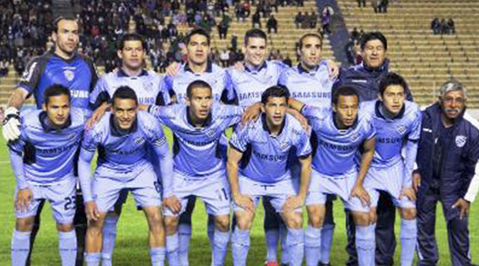

|  |
CLUB BOLIVAR12 DE ABRIL DE 1925 |
 La crisis estructural del fútbol puesta en evidencia por la catástrofe de la selección en Cali, llevó a crear una entidad con la participación exclusiva de los clubes profesionales a nivel nacional. El 23 de agosto de 1977 en el entonces hotel Sheraton de La Paz, 16 clubes de casi todo el país, decidieron dar vida a la Liga del Fútbol Profesional Boliviano. El Club Bolívar Obtuvo el segundo campeonato liguero, el de 1978.
 El equipo campeón de 1978, el primer Bolívar campeón de esta nueva era: Carlos Conrado Jiménez, José Queiroz, Carlos del Puerto y Vlado Svigir; Ricardo Troncone, Aldo Fierro, Ramiro Vargas, Jimmy Lima, Héctor Cáceres, Pablo Baldivieso, Luis Gregorio Gallo; Erland Araoz, Stephan Matic, Carlos Aragonés; Viviano Lugo, Raúl Alberto Morales, Waldino Palacios, Jesús Reynaldo, Porfirio “Tamayá” Jiménez” y Carlos Borja (entonces puntero derecho). En 1979 ganó un certamen menor de carácter oficial, llamado Copa Liga. Durante la década de 1980 conquistó su primer bicampeonato en los torneos de 1982 y 1983, obtuvo el torneo de 1985 y también su segundo bicampeonato ganando los torneos de 1987 y 1988. En los años 1990 volvió a consagrarse bicampeón en 1991-1992, en 1994, otra vez bicampeón en 1996-1997 y subcampeón en 1990 y 1993. También ganó los torneos cortos Apertura 1997 y Clausura 1997.
 En el nuevo milenio, Bolívar ganó su primer título, al ganar el Torneo Apertura 2001. Al año siguiente mejora su campaña y obtiene el campeonato de Primera División al ganar los dos torneos cortos (Apertura y Clausura). La temporada significó también la consagración de Joaquín Botero quien logró terminar el año con 49 tantos, lo que le valió para que la Federación Internacional de Historia y Estadística del Fútbol (IFFHS), lo premie como el mejor goleador mundial de Primera División en 2002. A partir de 2003 se dejó de jugar la final anual y los ganadores de ambos torneos Apertura y Clausura fueron considerados Campeones Nacionales de Primera División. De este modo, el club obtuvo los títulos del torneo Apertura 2004, el torneo adecuación 2005 y el torneo clausura 2006.
 El 2008 se inició un nuevo ciclo en el club, con el proyecto BAISA y el tándem Marcelo Claure, Guido Loayza. El primer logro de esta nueva fase celeste se dio en el Campeonato Apertura del 2009. En 2011 logró coronarse campeón del torneo Adecuación de la Liga. En 2013 el club Bolívar logra ganar el torneo el Clausura. En la segunda mitad del año 2014 Bolívar logra ganar el Torneo Apertura, en el siguiente torneo volvió a ganar el Torneo Clausura 2015. El equipo celeste repitió por sexta vez un bicampeonato, al obtener el Torneo Clausura y Apertura 2017 logrando así su vigésimo segundo título de Primera División.